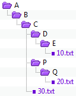

Im Aktionen-Menü verschiebt der Befehl In Ordner verschieben  die ausgewählten Dateien und Ordner in einen gegebenen Ordner; optional mit einem ganzen Pfad. Sie können Objekte auf der einen oder der anderen Seite der Ordnervergleichsansicht auswählen, jedoch nicht auf beiden.
die ausgewählten Dateien und Ordner in einen gegebenen Ordner; optional mit einem ganzen Pfad. Sie können Objekte auf der einen oder der anderen Seite der Ordnervergleichsansicht auswählen, jedoch nicht auf beiden.
Ist ein Ordner ausgewählt, so wird nur sein gefilterter Inhalt verschoben (so als ob der Ordner geöffnet wurde und jeglicher sichtbarer Inhalt markiert wurde). Sollte jedoch ein geöffneter Ordner ausgewählt sein und irgendwelche seiner Unterordner ebenfalls ausgewählt sein, so werden lediglich die ausgewählten Unterordner verschoben, und die Auswahl des Ordners ignoriert.
Wenn Sie In Ordner verschieben wählen, dann können Sie eine Archivdatei (wie z.B. .ZIP) als Ziel verwenden. Sollte die Archivdatei nicht existieren, wird sie von Beyond Compare erstellt.
Beispiel für Pfadoptionen
In diesem Beispiel sind drei Objekte ausgewählt: Die Datei 10.txt, der Ordner Q und die Datei 30.txt.
Die Bilder zeigen wie diese Objekte im Zielordner, unter Verwendung jeder der drei zur Verfügung stehenden Pfadoptionen, aussehen.

Relative Ordnerstruktur behalten
Ermittelt den minimalen Unterschied zwischen allen ausgewählten Dateipfaden, und erstellt dieses im Zielordner. In diesem Beispiel waren die Ordner D und P nicht ausgewählt, wurden aber im Zielordner erstellt, um die relative Struktur zu erhalten.

Basisordnerstruktur behalten
Erstellt im Zielordner den kompletten Pfad (bis zurück zum Basisordner).

Ordnerstruktur nicht behalten
Ignoriert sämtliche Pfadinformationen und verschiebt alle ausgewählten Dateien und Ordner zusammen in den Zielordner. In diesem Beispiel wurde lediglich der Ordner Q im Zielordner erstellt, da er zuvor explizit ausgewählt wurde.